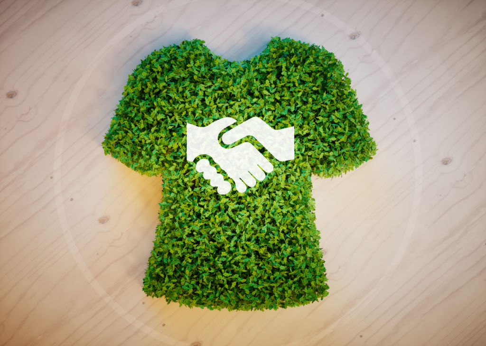

Actualmente la Facultad de Ingeniería se encuentra desarrollando un proyecto, cuyo objetivo es realizar un prototipo de aplicación móvil, la cual contribuya a la disminución de la contaminación textil, la aplicación permitirá la venta, la compra, donación y reciclaje de las prendas no utilizadas, se centra en la problemática de la moda rápida (fast fashion), este es un fenómeno por el cual se comercializan prendas que siguen tendencias actuales, en el que esta es producida a grandes escalas. De estas prendas producidas gran porcentaje no son utilizadas y no cumplen su ciclo de vida, así mismo prendas que la población tiene reservada en su armario y van a ser desechadas, es decir problemas de contaminación ambiental,problema que ocasiona no solo masiva sino también la de menor escala y la producción de cada uno de los ciclos de vida. En este documento veremos la investigación que se ha desarrollado a lo largo del semestre, buscando y aportando soluciones para el desarrollo de la misma aplicación,se analizaron documentos, proyectos anteriormente realizados y diferentes análisis, quienes contribuyen a la implementación e idea de la app
Las ideas principales de nuestro proyecto son REUTILIZAR Con la reutilización de la ropa y el calzado se consigue disminuir el consumo de recursos naturales como el agua o combustibles fósiles, así como de fertilizantes y pesticidas que se emplean en la fabricación de productos textiles. donación. Tal como la donación de suministros es una acción a considerar para la reducción del exceso, también es aplicable al reutilizar, al permitir que tu ropa tenga una segunda vida, estás apoyando el consumo responsable, lo cual beneficia al planeta. La industria textil y de la moda es la segunda más contaminante, por detrás de la petrolera.Por eso por esta aplicación se quiere reducir este contaminante. Reciclar Los beneficios derivados del reciclaje textil se centran en la disminución del consumo de recursos en el proceso de producción de prendas nuevas
El motivo principal de este proyecto fue contribuir con las estrategias de desarrollo sostenible frente a la contaminación y el cambio climático Mediante escuetas se espera calcular el porcentaje de cuantas personas re utilizan o donan sus prendas sin necesidad de desecharlas o que si en dado caso las desechan que lo desechen en el lugar indicado Mediante las encuestas también se espera indagar y conocer acerca de si las personas conocen o han escuchado el tema de moda sostenible, si no se conoce mucho del tema se espera tener un vran impacto con esta aplicación haciendo que muchas personas se perfilen a usar la aplicación
